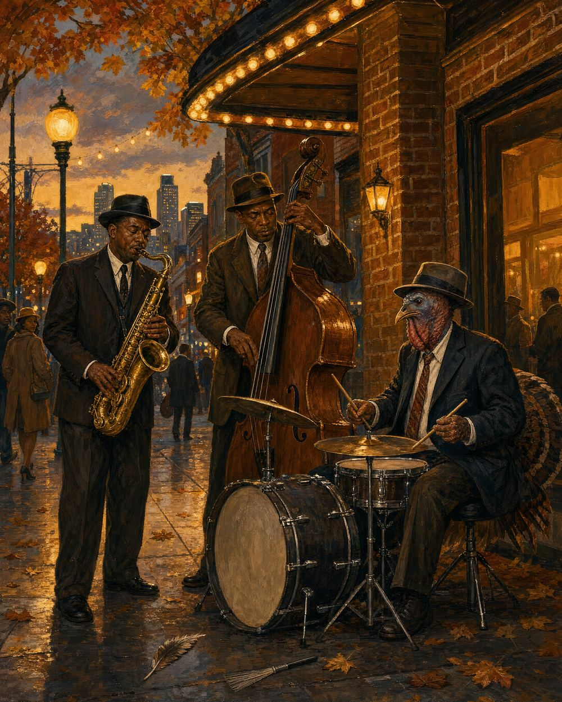

Why did the turkey join the band?
Because it had the drumsticks.
November 2027
| S | M | T | W | T | F | S |
|---|---|---|---|---|---|---|
| · | 1 | 2 | 3 | 4 | 5 | 6 |
| 7 | 8 | 9 | 10 | 11 | 12 | 13 |
| 14 | 15 | 16 | 17 | 18 | 19 | 20 |
| 21 | 22 | 23 | 24 | 25 | 26 | 27 |
| 28 | 29 | 30 | · | · | · | · |
Birthplace of the Kansas City jazz sound in the 1920s–30s, and the former stomping ground of Charlie Parker and Count Basie. Today it's home to the American Jazz Museum and the Negro Leagues Baseball Museum.
Nobody in the trio treats the turkey as remarkable — that restraint is the whole joke. The feather beside the dropped drum brush at his feet is the one easter egg this page allows itself.